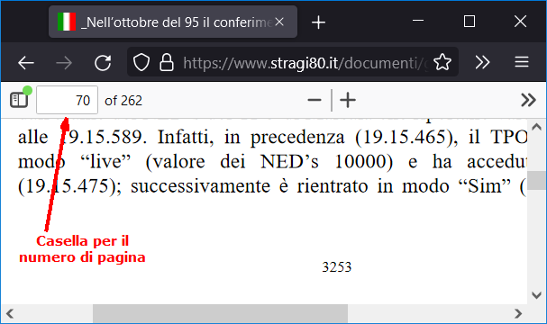

I documenti scaricabili dall'Archivio Storico del Senato della Repubblica richiedono l'accesso tramite SPID. Dopo aver spuntato alcuni consensi relativi alla licenza d'uso dei file, verrà fornito un link temporaneo personale dal quale scaricare i file. Per tale motivo, quando si fa riferimento a questi documenti non è possibile fornire il link contestuale per scaricare il file trattato.
I file PDF scaricati riporteranno, in sovrimpressione su tutte le pagine, i dati tratti dallo SPID sotto forma di una filigrana grigio chiaro, che non compromette la leggibilità del documento.

Il riferimento fatto con il numero sequenziale della pagina rende particolarmente rapida la verifica di ciò che viene affermato in relazione al link, come risulta evidente dall'immagine che mostra il browser Firefox mentre visualizza un PDF d'esempio.
Infatti, nella casella indicata dalla freccia, si può scrivere il numero di pagina del PDF, accedendo con immediatezza alla pagina d'interesse, evitando di scorrere centinaia o migliaia di pagine.
La stessa possibilità viene offerta dalla quasi totalità dei browser e dei programmi normalmente usati per leggere documenti in formato PDF.
Quindi, in questo esempio, nel sito verrebbe indicata la pag. 70 e non la pag. 3253.
Alcuni PDF sono abbastanza grandi (vari megabyte); ne tenga conto chi ha connessioni a volume di traffico o particolarmente lente.